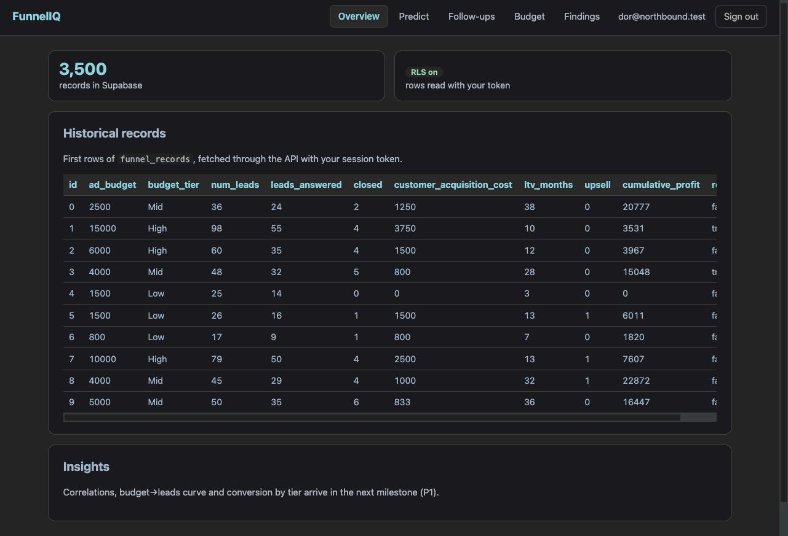

M1: Supabase, RLS ולוגין אמיתי
התחנה שבה שלושת העמודים מתחברים: הדאטה יושב ב-Postgres מאחורי Row Level Security, ה-API מאמת טוקן של Supabase ושואל את המסד בתור המשתמש, והדפדפן מקבל מסך התחברות אמיתי. זר שפותח את הכתובת רואה לוגין ותו לא.
שער M1: עבר 8/8בשפה פשוטה: מה קרה בתחנה הזו
העלינו את 3,500 השורות מה-CSV לטבלה ב-Supabase עם סקריפט שאפשר להריץ שוב ושוב בלי לייצר כפילויות. הדלקנו RLS: המסד עצמו מסרב לתת שורות למי שלא מחובר. כתבנו בשרת קוד שמאמת את הטוקן ש-Supabase נותן אחרי לוגין (חתימה ES256 מול המפתח הציבורי של הפרויקט), ואז שולח את אותו טוקן הלאה ל-Postgres, כך שהמדיניות נאכפת שם ולא אצלנו. בדפדפן יש דף לוגין עם supabase-js ומפתח ה-anon הציבורי בלבד. מפתח ה-service קיים רק במחשב של דור.
מה נבנה
- ניקוי משותף:
ml/data.py: טעינה, המרת referred ל-boolean, budget_tier, row_id יציב, ייצוא JSON-safe. 8 בדיקות. אותו קוד ישמש את האימון ואת השירות. - סכמה ומדיניות:
db/schema.sql(טבלתfunnel_recordsעם עמודת tier מחושבת, וטבלתprediction_logלרישום חיזויים) ו-db/policies.sql(RLS: קריאה ל-authenticated בלבד; ב-prediction_log כל משתמש רואה וכותב רק את השורות שלו). - טעינה:
scripts/load_data.py: upsert לפי id בקבוצות של 500 עם מפתח ה-service, מקומי בלבד. הרצה כפולה השאירה בדיוק 3,500 שורות. - אימות:
app/auth.py: אימות JWT מול JWKS (ES256/RS256) עם fallback ל-HS256 לפרויקטים ישנים; דורש aud=authenticated ו-exp. 8 בדיקות, כולל דחיית טוקן שנחתם במפתח זר. - לקוח לפי משתמש:
app/db.py: לקוח supabase חדש לכל בקשה עם הטוקן של המשתמש. ה-API מחזיק רק את מפתח ה-anon. - API:
GET /api/recordsעם דפדוף; 401 בלי טוקן, 422 על פרמטרים לא חוקיים. - דפדפן:
login.html,dashboard.html(לשוניות, sign-out, טבלת רשומות),app.js(עוזר fetch עם Bearer, ניתוב ללוגין כשאין session).
תוצאת השער
- עבר · pytest ירוק (24 בדיקות).
- עבר · ruff נקי.
- עבר · אין חומר מפתחות ב-git.
- עבר ·
funnel_recordsמכיל 3,500 שורות אחרי שתי הרצות של הטוען. - עבר · RLS: פנייה ישירה למסד עם מפתח anon ובלי טוקן מחזירה 0 שורות.
- עבר · RLS: משתמש הצוות המחובר רואה 3,500 שורות.
- עבר ·
/api/recordsהחי מחזיר 401 בלי טוקן. - עבר ·
/api/recordsהחי עם טוקן מחזיר 200 ו-total 3,500.
בדפדפן (ידני, מתועד): כניסה ל-URL בלי session ← הפניה ללוגין · דור התחבר ← הדשבורד הציג את האימייל שלו, 3,500 רשומות ו-10 שורות ראשונות · Sign out ← חזרה ללוגין בלי הפניה חזרה (ה-session נמחק).
$ python scripts/gate.py --m 1 [PASS] pytest green [PASS] ruff clean [PASS] no secrets in git [PASS] funnel_records has 3500 rows (loader idempotent) [PASS] RLS: anon without JWT sees 0 rows [PASS] RLS: signed-in user sees 3500 rows [PASS] live /api/records -> 401 without token [PASS] live /api/records -> 200 + total 3500 with token GATE M1: PASS 8/8
הדשבורד אחרי התחברות (URL חי)

מה למדנו הפעם
1. Railway החליף builder מתחת לרגליים
הפריסה השנייה נכשלה עם "No start command detected": Railway עבר מ-Nixpacks ל-Railpack, ש-לא מזהה אפליקציה שיושבת ב-app/main.py. הפריסה הישנה המשיכה לשרת (Railway שומר על האחרונה שעברה healthcheck), אז שום דבר לא נפל. תוקן ב-PR #6: railpack.json עם פקודת ההפעלה המפורשת, ו-railway.json מצהיר על Railpack.
2. RLS בלי מדיניות = נעול לכולם
אחרי הרצת הסכמה עם "Enable RLS", המשתמש המחובר קיבל 0 שורות בדיוק כמו anon. הסיבה: policies.sql לא באמת רץ (עורך ה-SQL מריץ רק טקסט מסומן אם יש סימון). הפתרון היה שאילתה אחת שיוצרת את המדיניות ומחזירה את הספירה באותה הרצה: 3500 | 3 | postgres. לקח: לאמת תוצאה בתוך אותה פקודה, לא בפקודה נפרדת.
3. סורק סודות שמחפש מילים תופס הערות
המילה service_role בהערה ב-SQL הפילה את השער. הסריקה עברה לחפש חומר מפתחות בלבד: מחרוזות בצורת JWT, מפתחות sb_secret_, או השמה של מפתח service עם ערך אמיתי.
4. שלושה דברים שהתגלו על הפרויקט הספציפי
- הפרויקט חותם טוקנים ב-ES256 עם JWKS ← לא נדרש שום secret בשרת. ה-fallback ל-HS256 נשאר בקוד לפרויקטים ישנים.
- ההרשמה העצמית כובתה (אומת ישירות מול
/auth/v1/settings:disable_signup: true). - מפתח ה-service לא הוגדר ב-Railway; ה-API החי מחזיק רק URL + anon key.
הבא בתור: M2
החצי הלא-מקוון של M2 כבר נבנה (בזמן ההמתנה ל-Supabase): מודול ה-EDA, docs/FINDINGS.md שנוצר ממספרים מחושבים, /api/insights/overview ולשונית Overview עם גרפים. נותר: לאשר את שתי ההחלטות D-M2-1 (מודלי לקוח על purchased=1; מודל רווח על הכל) ו-D-M2-2 (לא ממלאים מטרות), למזג, ולאמת את הפאנל על ה-URL החי.